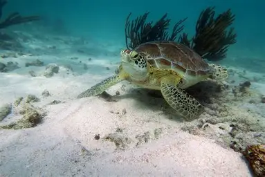
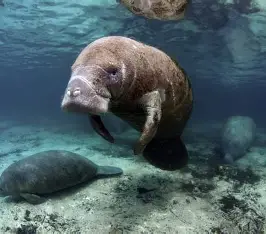

23 July 2025 / Marine Life
Endangered Species In Cameroon's Oceans
- Common Name: Atlantic Green Turtle
- Scientific Name: Chelonia mydas
- Life Expectancy: 80 years
- Status: Endangered
- Global Porpulation: est. 100.000-200.000 nursing mothers

23 July 2025 / Marine Life
Endangered Species In Cameroon's Oceans
- Common Name: Sawfish
- Scientific Name: Pristis microdon
- Life Expectancy: 30-50 years
- Status: Critically endangered
- Global Porpulation: Exact numbers unknown

23 July 2025 / Marine Life
Endangered Species In Cameroon's Oceans
- Common Name: African Manatee
- Scientific Name: Trichechus senegalensis
- Life Expectancy: Up to 60 years
- Status: Vulnerable
- Global Porpulation: 10 000 individuals